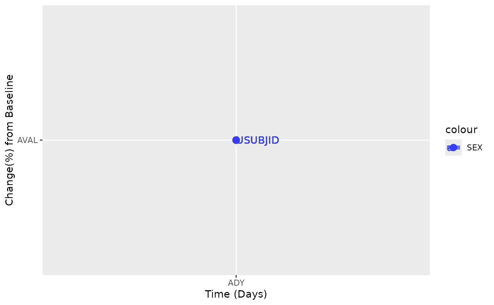

Description of this plot
Usage
spiderplot_simple(
anl,
byvar = "USUBJID",
days = "TRTDURD",
mes_value = "PARAM",
group_col = "USUBJID",
baseday = 0
)Examples
library(dplyr)
library(nestcolor)
ADSL <- osprey::rADSL[1:15, ]
ADTR <- osprey::rADTR
ANL <- left_join(ADSL, ADTR)
#> Joining with `by = join_by(STUDYID, USUBJID, SUBJID, SITEID, AGE, AGEU, SEX,
#> RACE, ETHNIC, COUNTRY, DTHFL, INVID, INVNAM, ARM, ARMCD, ACTARM, ACTARMCD,
#> TRT01P, TRT01A, TRT02P, TRT02A, REGION1, STRATA1, STRATA2, BMRKR1, BMRKR2,
#> ITTFL, SAFFL, BMEASIFL, BEP01FL, AEWITHFL, RANDDT, TRTSDTM, TRTEDTM, TRT01SDTM,
#> TRT01EDTM, TRT02SDTM, TRT02EDTM, AP01SDTM, AP01EDTM, AP02SDTM, AP02EDTM,
#> EOSSTT, EOTSTT, EOSDT, EOSDY, DCSREAS, DTHDT, DTHCAUS, DTHCAT, LDDTHELD,
#> LDDTHGR1, LSTALVDT, DTHADY, ADTHAUT)`
ANL %>%
dplyr::filter(ANL01FL == "Y" & PARAMCD == "SLDINV") %>%
spiderplot_simple(group_col = "SEX", days = "ADY", mes_value = "AVAL")
#> Warning: All aesthetics have length 1, but the data has 60 rows.
#> ℹ Please consider using `annotate()` or provide this layer with data containing
#> a single row.
#> Warning: All aesthetics have length 1, but the data has 60 rows.
#> ℹ Please consider using `annotate()` or provide this layer with data containing
#> a single row.
#> Warning: All aesthetics have length 1, but the data has 15 rows.
#> ℹ Please consider using `annotate()` or provide this layer with data containing
#> a single row.
